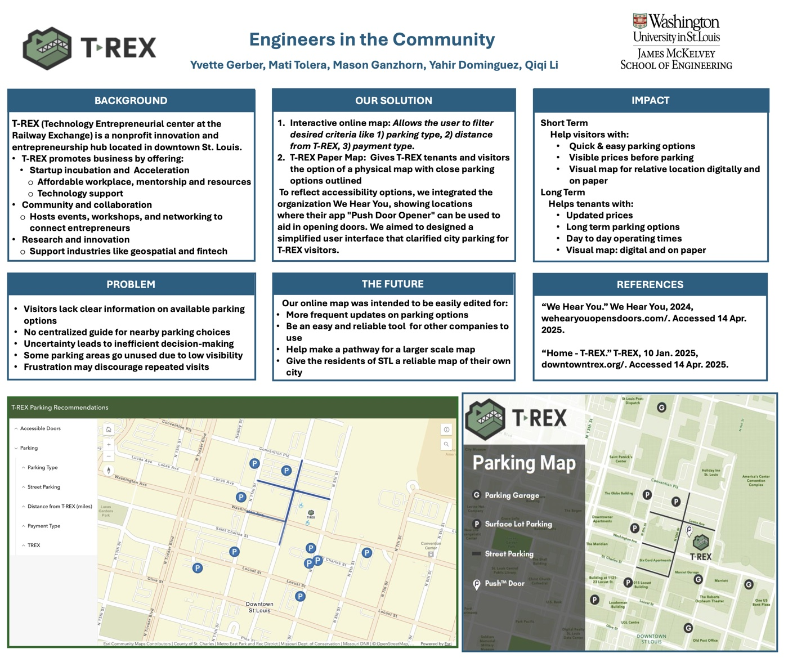

Click to enlarge
This GIS project was developed through a collaboration with T-REX, a St. Louis nonprofit focused on providing accessible resources and support to community entrepreneurs and businesses. Limited and unstructured parking around T-REX created challenges for visitors and community members, potentially discouraging people from accessing the organization’s resources and facilities. To address this issue, I used Esri ArcGIS Pro to develop a spatial inventory and visualization of available parking in the surrounding area. I collected and organized parking locations as point features and applied attribute-based symbology to distinguish parking by type, distance from T-REX, payment method, and accessibility. The resulting GIS layers were then integrated into Esri’s web-based applications to create a user-friendly interactive interface, allowing users to explore parking options and identify locations based on their individual needs.